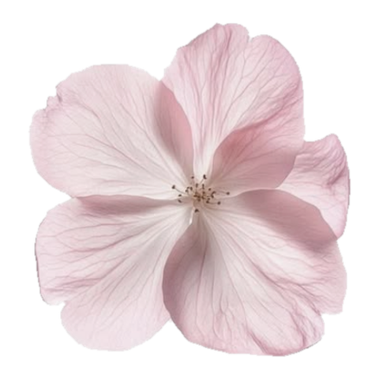
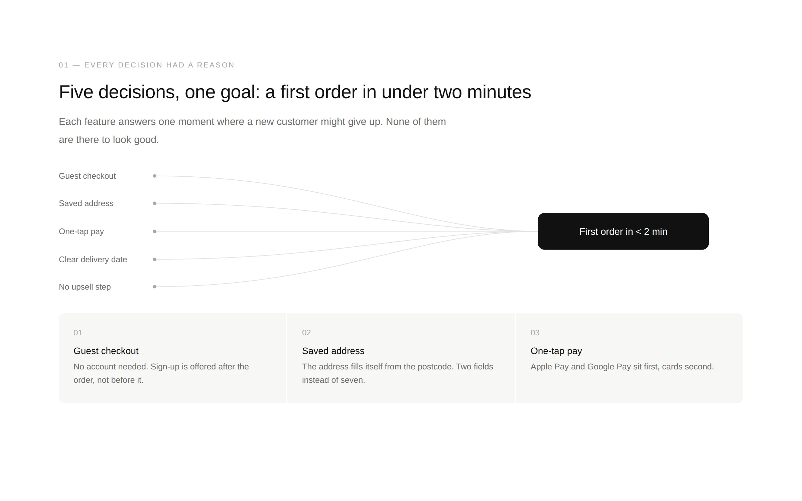
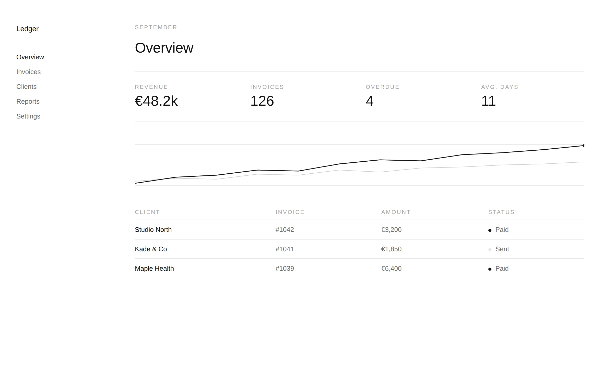
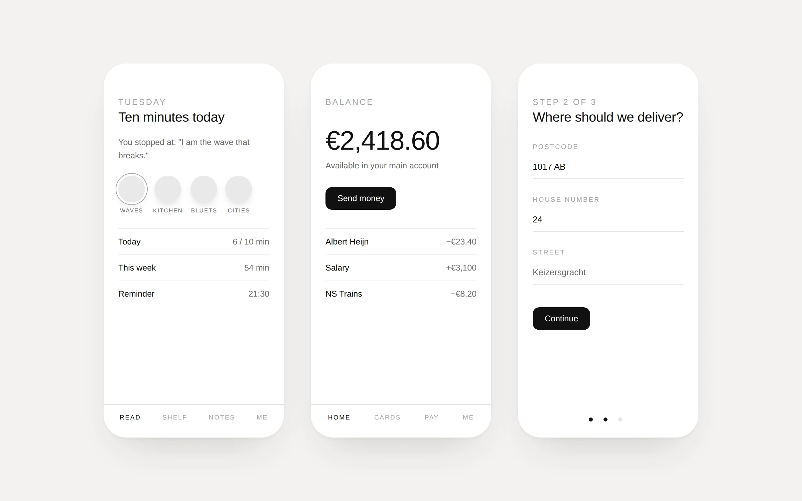
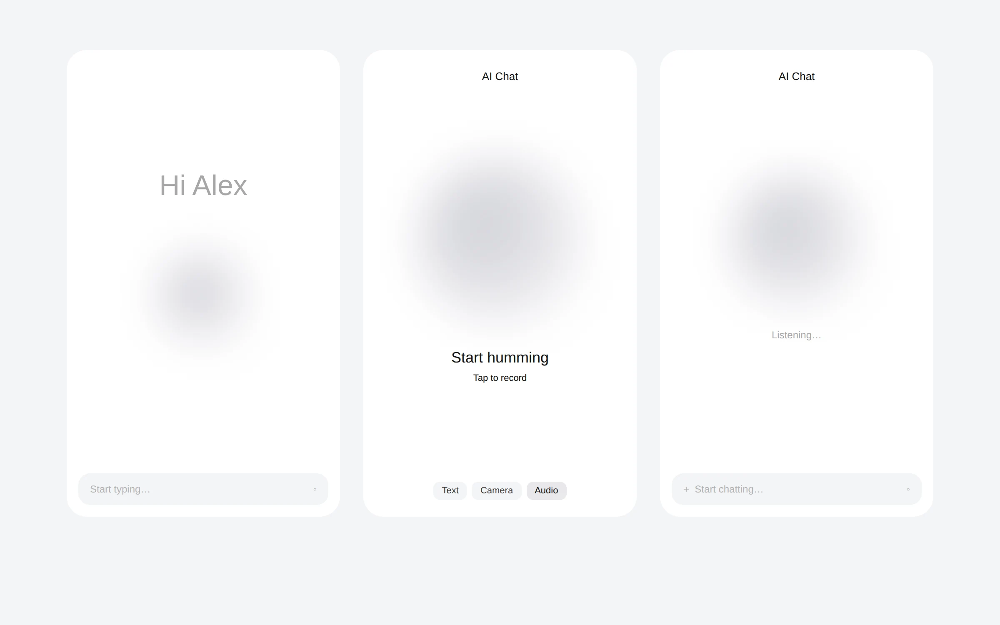
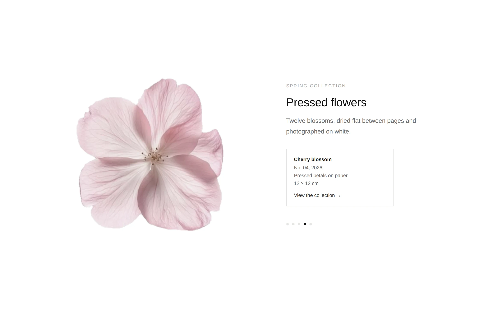

No style prompt needed
Just say "make this in the gallery style." The spacing, type sizes and components are already decided.
A Claude skill
Give Claude your content and it comes back as a quiet, gallery-style interface. An article, a case study, a dashboard, a phone app, an AI screen. Lots of white space, tiny precise labels, and one thing on each screen that matters.

01 — What it does
I kept saving screenshots of interfaces I loved: a museum page, a small music toy, a designer's case study, a calm AI app. They all did the same thing. They got out of the way. So I wrote those rules down as a skill, and now every page I ask Claude for comes out that way.
Just say "make this in the gallery style." The spacing, type sizes and components are already decided.
Writing becomes an editorial page, images become a gallery, AI features get soft orb screens, tools get tactile controls.
No colors are invented. Your own photos keep theirs, and if you want an accent, you show it a picture.
02 — Examples
Each one came from a few lines of made-up content and one request.





03 — About color
By default there is no color at all. Upload a screenshot or a photo you like and it pulls two to four colors from it, tells you which, and uses them as sparingly as the picture does.
04 — How to use it
Download the skill from GitHub and add it to Claude. After that, any of these work:
"Make this case study into a page in the gallery style."
"Design three phone screens for my reading app, minimal gallery style."
"Turn these notes into a web dashboard. Use the colors from this screenshot."
Open source
The whole skill is one file you can read in a few minutes.